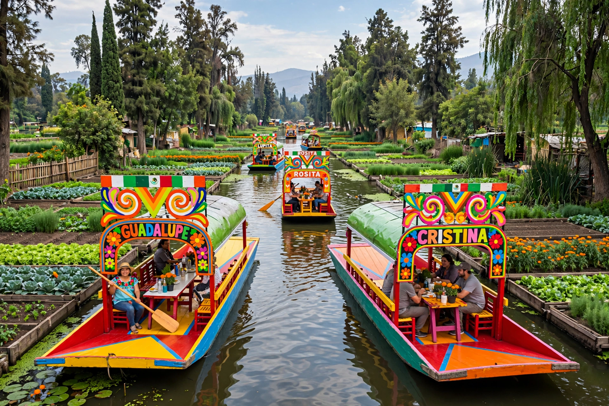

| Xochimilco | |
|---|---|
 | |
| Country | Mexico |
| City | Mexico City |
| Known for | Chinampas, trajineras (canal boats) |
| UNESCO | World Heritage Site (1987, with the Historic Centre of Mexico City) |
Xochimilco (Nahuatl: Xōchimīlco, "in the flower field") is one of the 16 boroughs (alcaldías) of Mexico City, lying at the city's southern edge. It is famous for its network of canals — among the last remains of the extensive lake and canal system of the Valley of Mexico — and for the chinampas, artificial agricultural islands built since pre-Hispanic times.
The Xochimilca were among the first Nahua peoples to settle the Valley of Mexico, arriving around the 9th–10th centuries. Their lakeshore city was conquered by the Mexica (Aztecs) in the 15th century, and its chinampa gardens became a vital food source for the capital Tenochtitlan, produce being carried into the city by canoe. After the Spanish conquest the lake was progressively drained, but Xochimilco's canal zone survived, supplied by springs and later by treated water.
Chinampas are raised beds built in shallow lake water from mud, sediment and vegetation, anchored by ahuejote willows; they remain highly productive for vegetables and flowers. Today about 180 km of canals survive. Visitors ride flat-bottomed, brightly painted boats called trajineras, poled through the canals among floating mariachi bands and food vendors. The area is also known for the Island of the Dolls (Isla de las Muñecas), hung with decaying dolls by a former hermit resident.
The canals are the last natural habitat of the axolotl (Ambystoma mexicanum), the paedomorphic salamander native to Lake Xochimilco, now critically endangered by pollution, water extraction and invasive carp and tilapia. Conservation projects build predator-free refuges within chinampas for its recovery. In 1987 Xochimilco was inscribed, together with the Historic Centre of Mexico City, as a UNESCO World Heritage Site.